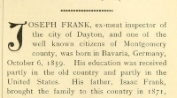

Profile of Joseph Frank (b. 1859) from historical Dayton, Montgomery county (Ohio) book in 1897
 Profile of Joseph Frank (b. 1859) from historical Montgomery county (Ohio) book in 1897.
Citation
"Joseph Frank," Centennial portrait and biographical record of the city of Dayton and of Montgomery county, Ohio. 1897 (A. W. Bowen & Co. Logansport, IN), pages 503-504, accessed on the Internet Archive at https://archive.org/stream/centennialportra00cono#page/503/mode/1up.
Transcript of Profile [paragraphs, emphasis, & lists added]
JOSEPH FRANK, ex-meat inspector of the city of Dayton, and one of the well known citizens of Montgomery county, was born in Bavaria, Germany, October 6, 1859. His education was received partly in the old country and partly in the United States.
His father, Isaac Frank, brought the family to this country in 1871, coming at once to Dayton, where he is now one of the oldest butchers of this city.
Young Frank went to work with his father in the meat business when between sixteen and seventeen years of age, having previously been engaged in driving cattle to and from the stock yards.
- Remaining with his father till he was nineteen years of age, he then went to Cincinnati, where he was engaged for three years as a butcher.
- Returning to Dayton, he and his brother, Isadore, embarked in the grocery and meat market business, which they followed for about two years, when Mr. Frank engaged in butchering and dealing in cattle on his own account at Brookville, Montgomery county, Ohio, attending the Dayton market.
- He then spent a year in traveling for his uncle, Jacob Weinreich, formerly president of the Dayton city council, and, upon returning to the occupation of butcher, he purchased the meat market of F. J. Schmitt, on Third street, and operated it for two years.
- In March, 1891, he accepted the position of city salesman with N. Jacobs & Co., which he still holds, and on May 1, 1895, he was appointed by the city council meat inspector for the city for one year.
Mr. Frank was married in August, 1888, to Victoria Mayer, formerly of Houma, Terre Bonne parish, La.[Louisiana], and to this marriage there have been born three daughters and one son, as follows:
- Jennie,
- Bertram,
- Bertha and
- Sarah.
Mr. Frank has served several years on the democratic county central committee and is treasurer of the committee and also of the Gravel Hall democratic club, as well as of several societies. He is
- one of the directors of the Old Men's Invalid home of Cleveland, Ohio;
- is a member of the Odd Fellows' encampment and of the Knights of Pythias, and
- holds the position of commissary sergeant on Col. Coffman's staff.
- He is a member of the Jewish organization known as the O. K. S. B. [Order Kesher Shel Barzel], and is the representative to the grand lodge of the order.
In all these various orders and societies Mr. Frank maintains good standing and has the esteem of all the members. In business matters he has always been successful and is in every way a useful and worthy citizen.